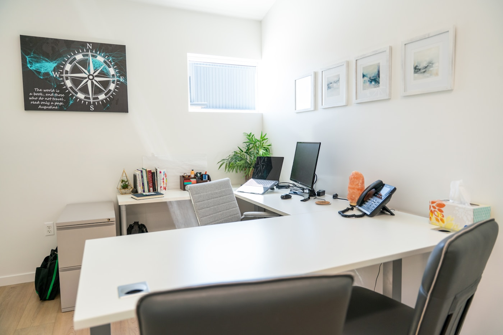

Premium virtual assistant support for busy leaders
Structured support that gives your week back and makes your business feel easier to run.
I help founders, agencies, coaches and executives stay on top of inboxes, schedules, client communication, follow-ups, research and admin operations with the polish of an in-house right hand.
Inbox and calendar management
Client support and follow-up
Research, reporting and admin
Inside the support experience
Calm systems, proactive communication and clean execution that helps you look organized at every touchpoint.

Weekly planning
Priority board refreshed every Monday
Client experience
Fast replies, cleaner handoffs, smoother follow-through
Typical wins
Fewer missed follow-ups
Better visibility across tasks, requests and deadlines.
Support style
Proactive and discreet
Reliable communication without adding noise to your day.
Built for founders
Designed for agencies
Trusted by consultants
Flexible across time zones
Detailed enough for executive support
About Aro Johnson
Support that feels thoughtful, polished and genuinely dependable.
The best virtual assistance does more than complete tasks. It improves rhythm, protects focus, reduces mental clutter and keeps your business moving even when your schedule is packed.
I bring a calm operational style, sharp attention to detail and a high standard for professionalism. That means cleaner inboxes, smoother scheduling, stronger client communication and more confidence that the important details are being handled properly.
Trusted with sensitive work
Confidential information, executive calendars and client communication are handled with care and discretion.
Fast without feeling rushed
Urgent tasks get momentum while recurring admin is documented and delivered consistently.
Clear communication
You get thoughtful updates, fewer back-and-forth loops and support that fits your preferred workflow.
Focused on outcomes
The goal is not just to stay busy. It is to create more capacity, better consistency and stronger delivery.
Services
High-value virtual assistant services that keep operations moving.
Each engagement is shaped around the tasks that steal the most time from your leadership, delivery or client-facing work.
Inbox and communication management
Inbox triage, drafting replies, follow-up tracking, message categorization and cleaner day-to-day communication flow.
Calendar and meeting coordination
Scheduling, rescheduling, reminders, time-zone coordination, agenda prep and meeting logistics without the chaos.
Client care and customer support
Warm, professional responses for leads, clients or customers across email, chat platforms and support workflows.
Administrative operations
Document formatting, data entry, CRM updates, file organization, SOP cleanup and recurring admin task management.
Research and reporting
Market research, competitor scans, lead sourcing, travel research and structured reports you can actually use.
Content and social coordination
Scheduling content, repurposing assets, tracking approvals and keeping marketing calendars organized across channels.
What you can delegate right away
Move the repetitive work off your plate without losing visibility.
- Daily inbox sorting, reply drafting and follow-up reminders
- Meeting scheduling, reminders and calendar hygiene
- Client onboarding prep, CRM updates and file organization
- Research, spreadsheet cleanup and report formatting
- Support queue responses and recurring admin operations
- Travel planning, itinerary preparation and logistics support
Case studies
Proof of work that feels relevant, practical and measurable.
These examples show the kind of detail-oriented support that helps businesses respond faster, stay organized and operate more smoothly.

Executive support
Founder inbox reset and follow-up system
Managed a high-volume founder inbox, introduced smarter labels, drafted routine replies and surfaced the messages that needed executive attention.

Calendar operations
Remote team scheduling across multiple time zones
Coordinated recurring check-ins, client calls and planning sessions for a distributed team while keeping calendars clean and conflict-free.

Client experience
Customer support cleanup for an online service business
Handled support messages, improved response consistency and created a cleaner handoff system so urgent requests stopped falling through the cracks.

Marketing support
Social content calendar and publishing support
Organized campaign assets, scheduled approved content and kept platform publishing aligned with a weekly and monthly content plan.

Admin systems
CRM cleanup and reporting for a growth-focused team
Updated records, standardized fields, removed duplicates and improved internal visibility so the sales and delivery teams had better data to work from.

Travel coordination
Executive travel research and itinerary coordination
Prepared travel options, organized confirmations, mapped itineraries and built easy-to-follow trip details for a busy leadership team.
Process
A simple onboarding flow that gets support in motion quickly.
The process is lightweight, strategic and designed to help us start with the tasks that create the fastest relief.
Discovery
We clarify your bottlenecks, recurring admin load, current tools and the outcomes you care about most.
Prioritization
I identify the highest-impact tasks to delegate first, then map the communication rhythm that suits your workflow.
Execution
Work begins with clear ownership, organized tracking and proactive updates so nothing important gets lost.
Optimization
We refine the support system over time, document smoother processes and make recurring work easier to maintain.
Tools and workflow
Comfortable inside the platforms most modern teams already use.
I work comfortably across communication, scheduling, documentation and task management tools so support can fit your current stack.
Google Workspace
Microsoft 365
Slack
Zoom
Notion
Asana
ClickUp
Trello
HubSpot
Canva
Calendly
Chat support tools
Client feedback
Calm support, strong communication and dependable follow-through.
Great assistant support should reduce stress, improve professionalism and give clients a better experience at the same time.
"Aro brought structure to my inbox and calendar almost immediately. I felt less reactive within the first week."
Michael C. Startup founder"The communication is polished, deadlines are respected and the support feels genuinely thoughtful, not generic."
Sarah W. Consultant and coach"Our client experience improved because someone was finally keeping the details organized and moving forward."
David P. Agency ownerFrequently asked questions
Everything clients usually want to know before getting started.
If you want premium support that feels flexible, organized and detail-driven, these answers should give you a clear picture of how we can work together.
Most clients start with inbox triage, calendar management, follow-ups, customer communication, document formatting, CRM updates, reporting and recurring admin work that steals attention from higher-value priorities.
Yes. Support is remote and flexible across time zones. Communication rhythms, response windows and recurring check-ins can be adapted to suit your location and operating hours.
We align on preferred channels, recurring updates and escalation rules at the start. That keeps communication clear, reduces unnecessary pings and ensures urgent work is surfaced quickly.
Absolutely. Support can be tailored around executive assistance, client support, admin operations, marketing coordination, research, reporting or a blended workflow that matches your current needs.
Yes. Confidentiality, discretion and organized handling of sensitive information are core parts of the service. If required, non-disclosure agreements can be part of the onboarding process.
Once scope, priorities and communication channels are agreed, support can usually begin quickly. The first phase is focused on creating relief fast and building a repeatable rhythm from there.
Contact
Ready for premium support that actually reduces your mental load?
Share what is slowing you down, where your operations feel messy, or which tasks you want off your plate first. I will use that context to suggest the best support starting point.
Thoughtful, professional and clear from the first reply.
Administrative excellence, client care and operational consistency.
Remote support for founders, consultants, executives and growing teams.